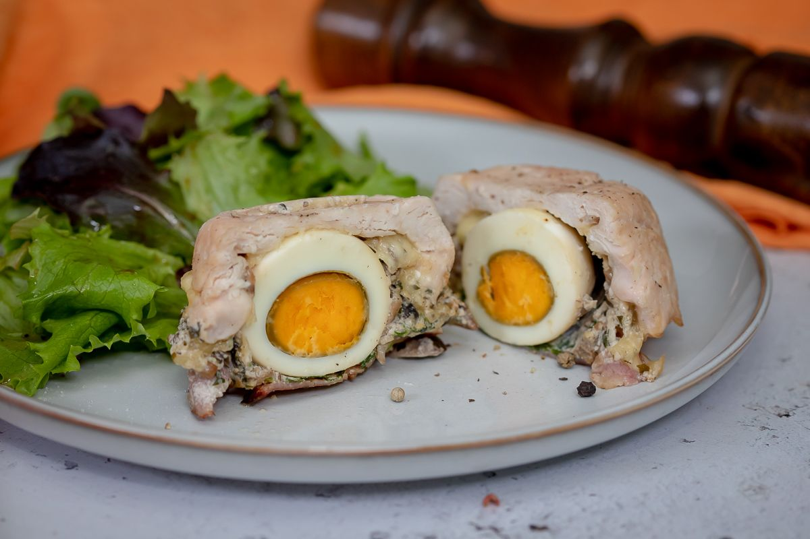

- Recept
- Egyszerű


Formázott csirkemell, ahogy Gáspár Bea készíti
| 70 perc | 4 adag | Megfizethető |
2001.09.11
Elkeszítés
- A tojásokat keményre főzzük. Ha kihűltek, meghámozzuk.
- Elkészítjük a ragut: a gombát apróra vágjuk, és kevés olajon megpirítjuk, majd puhára pároljuk. Ízesítjük sóval, borssal, kakukkfűvel. Ha kész, felöntjük a tejszínnel, és apróra vágott friss petrezselymet adunk hozzá.
- 4 db szufléformát kiolajozunk, majd a vékonyra klopfolt csirkemellekkel kibéleljük a formákat úgy, hogy bőven túllógjanak az edényke szélein. Beleteszünk egy-egy szelet sajtot, egy-egy főtt tojást, majd körékanalazzuk a gombaragut. Megszórjuk petrzselyemmel. Végül lefedjük a főtt, füstölt tarjaszeletekkel, és ráhajtuk a formából kilógó csirkehúst.
- A formákat tepsibe tesszük. A tepsibe annyi vizet töltünk, hogy kb. a feléig érjen a formáknak, és 180 fokon 1 óra alatt megsütjük. Az utolsó 10 percre kivesszük a vizes tepsiből, áttesszük egy szárazba, és úgy sütjük tovább.
- Amikor kész, leöntjük a húsról a felesleges folyadékot, és kiborítjuk a formából. Salátával kínáljuk.